Motivation
Throughout my time programming everything has been built on abstraction after abstraction. I have always been interested in learning how computers work at a hardware level. My aim is to make this knowledge concrete by actually building up the individual components and documenting the process.
Fundamentals
Before getting started on this journey there are some core physics concepts that will be useful throughout the project.
- Conventional current (I) is rate of charge flow $\dfrac{\Delta Q}{\Delta t}$ (A)
- Volate (V) is the difference in electric potential between two points.
- Resistance (R) of an object is a measurement of its opposition to the flow of electric current.
- Ohm's Law $V=IR$
- Kirchhoff's Voltage Law Sum of voltages around a closed circuit is zero $\sum{V} = 0$
Part 1 - Variable Clock Control
For the very first part we are going to construct an astable multivibrator utilizing the 555 timer IC, integrated with a 1M $\Omega$ potentiometer for clock speed adjustment. This is the schematic.
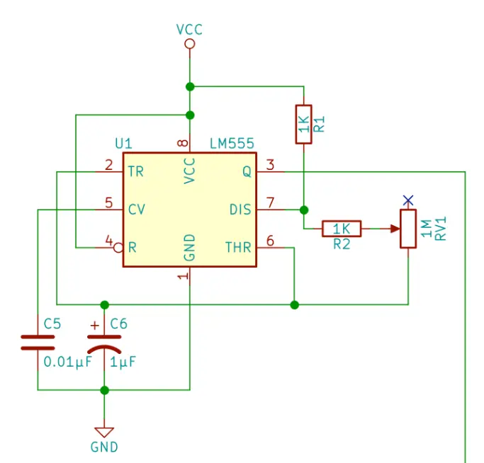
And here it is!
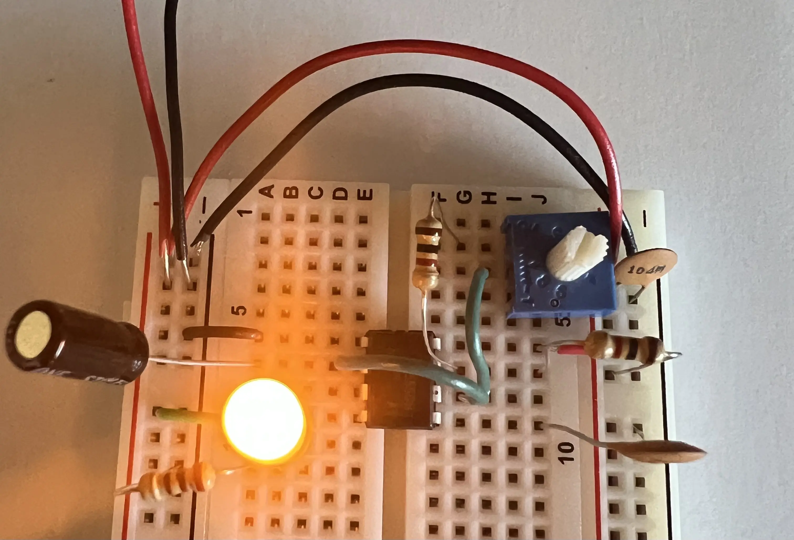
How this works
So what exactly is happening that leads this LED to blink. The magic is all within that little chip in the center, the 555 timer IC. Here is a diagram of the chip.
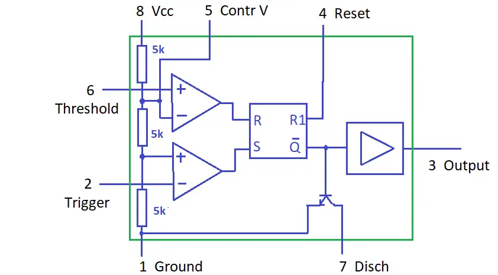
Let's start at the left side and work our way to the right. At the left side there are three 5K $\Omega$ resistors that are connected to VCC through pin 8, and to ground through pin 1. If you look at the image of my circuit you can see this as well. These set up a voltage divider. Next to these resistors are two comparators, the comparators turn on when the positive input is greater than the negative input.
Pin 6 is connected to the positive terminal of the top comparator, and the wire between the first two 5K $\Omega$ resistors is connected to the negative terminal, this means the negative terminal of the top comparator is receiving 2/3 the voltage. Pin 2 is connected to the negative terminal of the lower comparator, and the wire between the second and third 5K $\Omega$ resistors is connected to the positive terminal and has 1/3 the voltage. These comparators feed to an SR flip-flop. Let's take a closer look at the core of this, the SR latch.
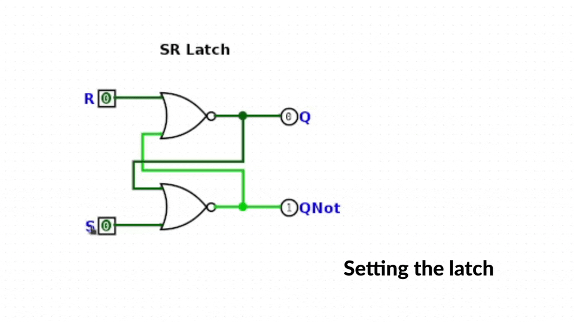
Here, the SR latch simply consists of two NOR gates. The magic of this configuration is that the SR latch is able to retain the state it was in. So if it was in a set state, it would retain that state even if the input became 0. The output $\overset{\_}{Q}$ is connected to an inverter going to pin 3, and a transistor.
Okay let's put this together now to see how it works. When we first turn this on the inputs at pin 6 and pin 2 are 0V. This means the comparator that pin 2 is connected to will turn on, since 0V is less than 1/3 of VCC. The top comparator connected to pin 6 will be off since 0V is not greater than 2/3 VCC. This means Q will be 1, and so $\overset{\_}{Q}$ will be 0. So the transistor will be off, and the inverter will turn that 0 to a 1, and the output will be a 1 or on.
Then as the capacitor charges the voltage will increase, and eventually the voltage at pin 2 will exceed the input at the positive terminal, and the bottom comparator will switch off. However, nothing will happen as the SR latch maintains its state. The voltage will continue to increase, and eventually the voltage at pin 6 will exceed the input at the negative terminal and the top comparator will turn on.
At this point Q will become 0, and so $\overset{\_}{Q}$ will be a 1. This turns the transistor on and starts the discharge process. Since $\overset{\_}{Q}$ is a 1, passing that through the inverter produces a 0, or off. When the transistor is turned on the capacitor will begin to discharge. This will cause the input at pin 6 to become lower than the negative input at the top comparator turning that comparator off, but as stated before the SR latch will maintain its state. The voltage will continue to decrease and eventually the input at pin 2 will become lower than the input at the positive terminal, turning the bottom comparator on. This will initiate the same process that we started with, and will continue, generating a standard clock waveform as the output.
Pretty neat! Here is a diagram of what this will look like.
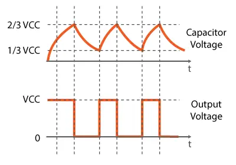
Part 2 - Manual Clock Control
Time to add in manual clock control, so we can push a button for a clock pulse! Here is the schematic.
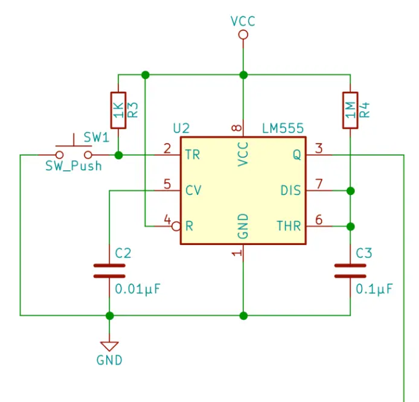
Here it is put together!
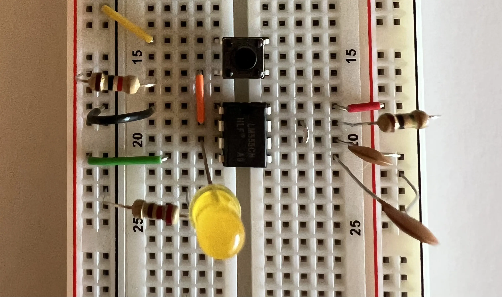
It's hard to see, but there is a wire going from row 19 to row 20. Pressing the button turns the LED on for a short time, unless you are holding it down. Swapping out the capacitor changes this timing. Now, you might be wondering why we are using a 555 timer IC for this, why not just use the button by itself. The problem with using the button by itself is noise, sometimes when we push the button the contacts bounce, which means we could accidently trigger multiple clock pulses. The 555 timer IC is one way we can get rid of this noise, this is known as a debouncing circuit.
This works in a similar manner to the previous circuit. Our button is connected to ground, and a 1K $\Omega$ resistor. We connect pin 2 to our button, and when it is pressed the comparator is turned on, since we pull the voltage low turning the output on. This also stops the discharge process, and the capacitor begins to charge, and eventually will trigger the reset. This will turn off the output, and start the discharge process again, turning off the top comparator, and if we are no longer pressing the button then our output will stay off. This is referred to as a monostable multivibrator, because only one of the states is stable, in our case the off state, since it will stay in that state until we push the button. The previous circuit is known as an astable multivibrator, because the state is constantly altering.
Part 3 - Bistable Clock Control
Now that we have an astable circuit and a monostable circuit we need to find a way to switch between the two. Here is the schematic for what we will build. Note that this is only the switch button, in the next part we will add in the logic to actually be able to switch between the two modes.
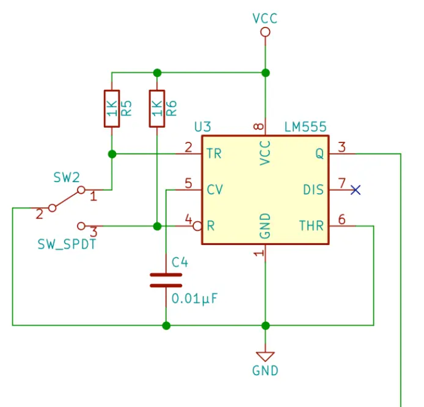
Here it is!
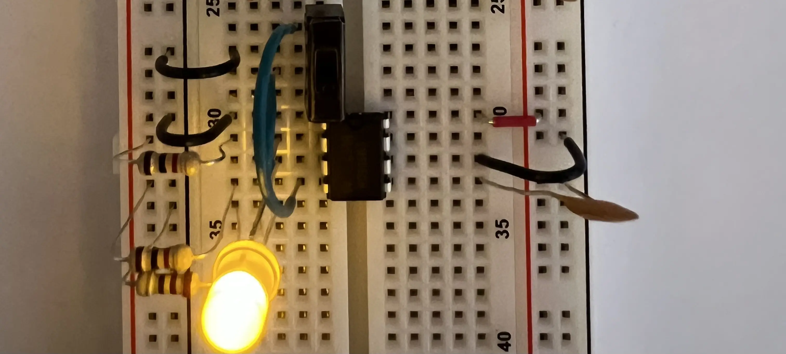
Once again, we use the 555 timer IC for debouncing purposes. In the next part we'll add in the logic to switch between our monostable and astable circuit!
Part 4 - Control Logic
Time to add in the logic to make our switch useful. By the end of this part we will be done with kit 1, and have a complete clock module! Here is the full schematic for the clock module.
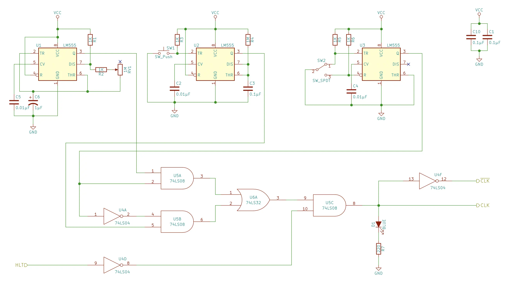
And here is the completed clock module in action.
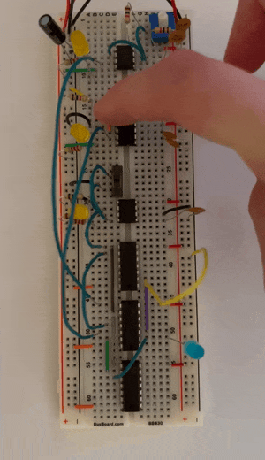
So how exactly does this work? Let's start with the inputs to the two AND gates. Input 1 comes from the output of our first circuit, this is the astable circuit, and input 2 comes from the switch. So if the switch is off the AND gate will output a 0 regardless of the output from the astable circuit. However, if the switch is turned on the AND gate will return a 1 on the rising edge of the clock. Which is how we get the flashing blue LED, which matches the yellow LED connected to the output of the 555 timer IC in astable mode.
Let's take a look at inputs 4 and 5 to that second AND gate. Input 4 comes from the switch, and that input is inverted. So if the switch is off the input will be a 1. Input 5 comes from the output of the monostable circuit, so when I press the button the AND gate will output a 1.
These two AND gates are connected to an OR gate, so when one of the outputs is a 1 the OR gate will output a 1. The OR gate is connected to an AND gate, and the second input comes from the halt line. The input from the halt line is inverted, so if the halt line is ground it will output a 1, allowing for output. Otherwise the output is a 0, so regardless of the input into the AND gate from the monostable or astable circuit there will be no output.
In the next part we will build the registers and ALU.